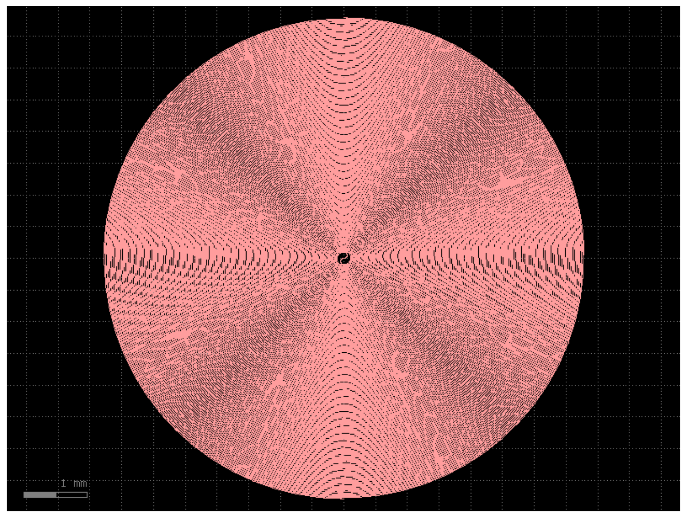

Design summary
| Platform | LPCVD stoichiometric Si₃N₄ strip (SiO₂ clad) |
| Design wavelength | 1550 nm |
| Target group delay | 20 ns |
| Phase index n (@1550 nm) | 1.9963 |
| Group index n_g (@1550 nm) | 2.0396 |
| Physical length L = c·τ/n_g | 2.940 m |
| Realised path length | 2.958 m |
| Realised delay | 20.12 ns |
| Core width | 1.0 µm |
| Minimum bend radius | 100 µm |
| Turn pitch (separation) | 15 µm |
| Loops | 122 |
| Die footprint | 7.50 × 7.52 mm |
| Topology | Double (in-and-out) Archimedean spiral |
n_g는 Si₃N₄ (Luke 2015) Sellmeier 식으로 1550 nm에서 정확히 계산한 재료 group index입니다. 실제 도파로 group index는 모드 구속에 따라 수 % 달라질 수 있으니, 측정값이 있으면 소스의 N_LOOPS를 그에 맞춰 조정하세요.
Layout preview

Downloads
⬇ GDS file (300 KB) ⬇ Python source (3 KB)
GDS는 GDSFactory generic PDK의 WG 레이어(1/0)에 그려져 있습니다. KLayout으로 바로 열거나 실제 공정 PDK 레이어로 remap해 사용하세요.
GDSFactory source code
"""
Si3N4 20 ns Spiral Delay Line - GDSFactory generator
====================================================
Platform : LPCVD stoichiometric Si3N4 strip waveguide (SiO2 clad)
Design wavelength : 1550 nm
Target : 20 ns optical group delay
Group index (material, exact)
Si3N4 Sellmeier (Luke 2015, LPCVD stoichiometric):
n^2 = 1 + 3.0249 L^2/(L^2 - 0.1353406^2)
+ 40314 L^2/(L^2 - 1239.842^2) [L in um]
n_g = n - L dn/dL -> n(1550) = 1.9963, n_g(1550) = 2.0396
Group delay -> physical length
L = c * tau / n_g = (2.99792458e8 * 20e-9) / 2.0396 = 2.940 m
n_g here is the *material* group index. The true waveguide group index
depends on modal confinement of the ~1.0 um Si3N4 core and shifts this
by a few percent; scale N_LOOPS if a measured n_g is available.
Si3N4 tolerates tight bends, so a 100 um minimum radius keeps radiation
loss negligible while the ~2.94 m path folds into a ~7.5 x 7.5 mm die.
The path is a continuous in-and-out double (Archimedean) spiral: both
ports emerge at the spiral center with no crossing.
"""
import gdsfactory as gf
gf.gpdk.PDK.activate() # generic PDK required for the spiral cells
# --- design point ------------------------------------------------------
LAMBDA_NM = 1550.0
C_LIGHT = 2.99792458e8 # m/s
TAU = 20e-9 # s (20 ns)
# exact material group index from Si3N4 Sellmeier (Luke 2015) @ 1550 nm
def _n_si3n4(lam_um):
l2 = lam_um * lam_um
return (1 + 3.0249*l2/(l2-0.1353406**2)
+ 40314.0*l2/(l2-1239.842**2))**0.5
def _group_index(nfunc, lam_um, dl=1e-4):
n0 = nfunc(lam_um)
dndl = (nfunc(lam_um+dl) - nfunc(lam_um-dl)) / (2*dl)
return n0 - lam_um*dndl
N_PHASE = _n_si3n4(LAMBDA_NM/1000) # 1.9963
N_GROUP = _group_index(_n_si3n4, LAMBDA_NM/1000) # 2.0396
L_TARGET_M = C_LIGHT * TAU / N_GROUP
# --- geometry ----------------------------------------------------------
WG_WIDTH = 1.0 # um core width
MIN_RADIUS = 100.0 # um minimum bend radius (low-loss for Si3N4)
SEPARATION = 15.0 # um pitch between adjacent turns
N_LOOPS = 122 # solved so realised length ~= 20 ns target
xs = gf.cross_section.strip(width=WG_WIDTH, radius=MIN_RADIUS)
c = gf.components.spiral_double(
min_bend_radius=MIN_RADIUS, separation=SEPARATION,
number_of_loops=N_LOOPS, npoints=8000, cross_section=xs,
)
# --- report ------------------------------------------------------------
L_real_um = c.info["length"]
bb = c.bbox(); w, h = bb.right-bb.left, bb.top-bb.bottom
print(f"Wavelength : {LAMBDA_NM:.0f} nm")
print(f"n (phase) : {N_PHASE:.4f}")
print(f"n_g (group) : {N_GROUP:.4f}")
print(f"Target delay : {TAU*1e9:.1f} ns")
print(f"Target length : {L_TARGET_M*1e3:.1f} mm")
print(f"Realised length : {L_real_um/1e6:.4f} m")
print(f"Realised delay : {L_real_um*1e-6*N_GROUP/C_LIGHT*1e9:.2f} ns")
print(f"Die footprint : {w/1000:.2f} x {h/1000:.2f} mm")
c.write_gds("si3n4_20ns_delay.gds")
print("Written: si3n4_20ns_delay.gds")